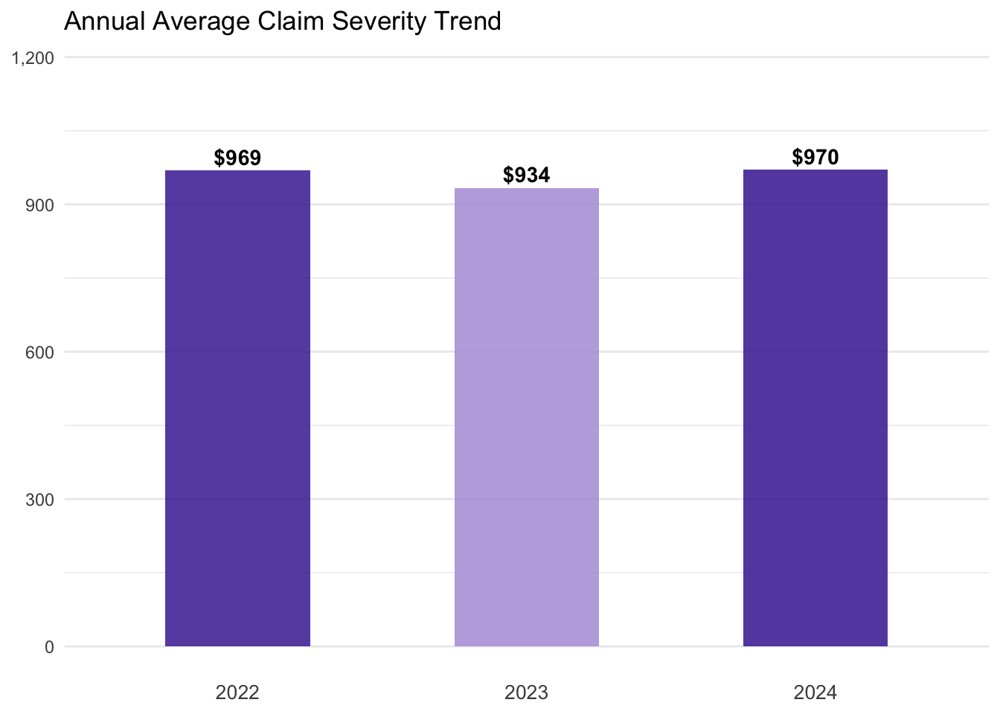
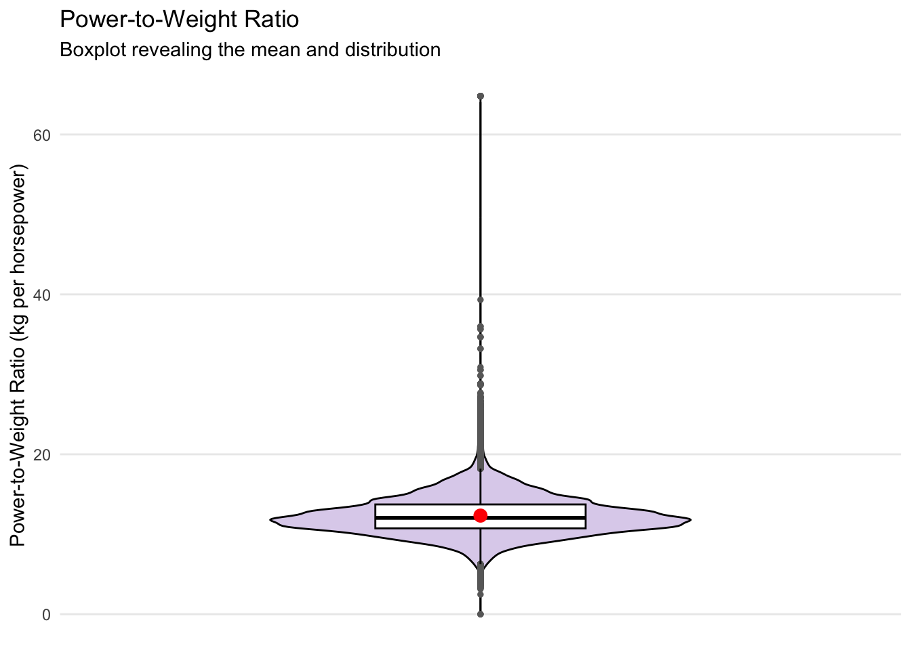
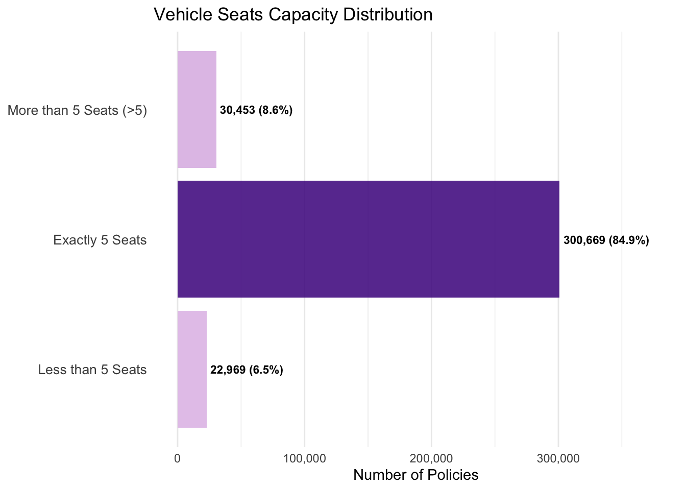
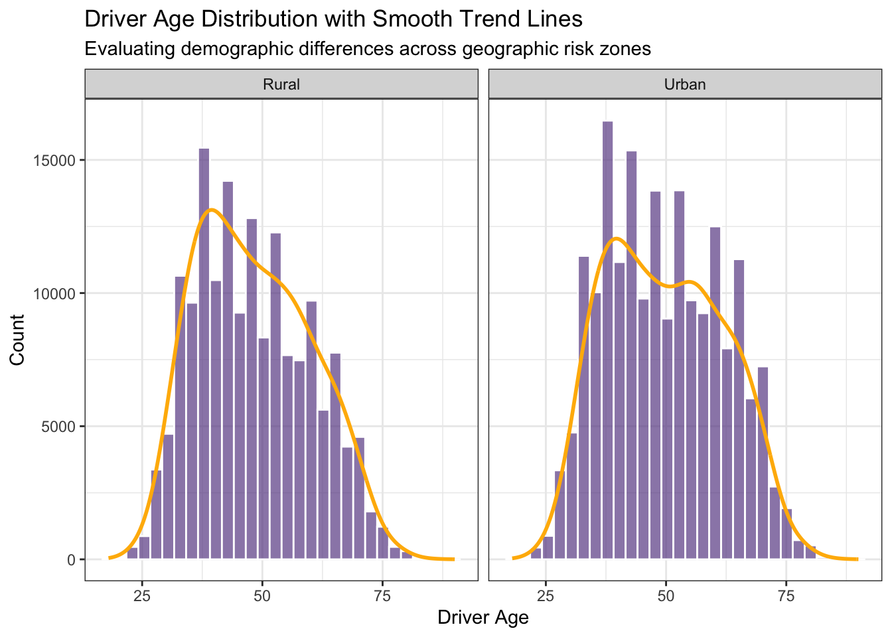
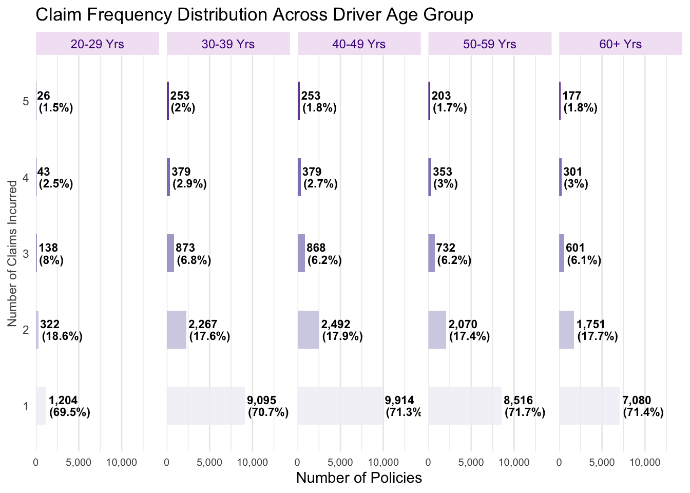
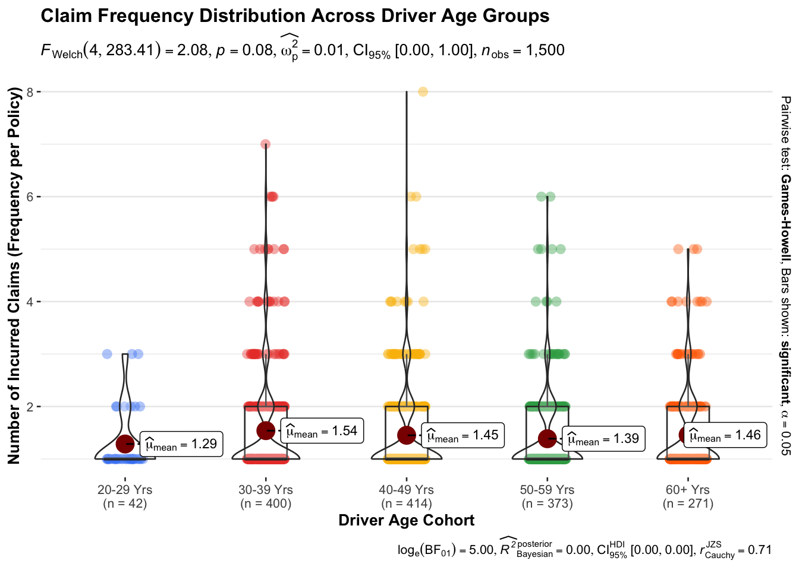
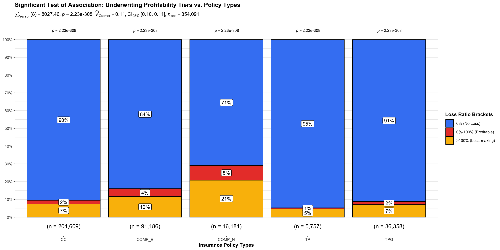

Explosive Revenue Growth: Realized total premium volume expanded 173% year-over-year, peaking strongly at $51.0M in 2024.
Aggressive Loss Escalation: Annual incurred claims grew even faster, climbing 210% to peak at $38.1M in 2024.
Actuarial Margin Warning: Top-line revenue expansion is heavily masking an underlying operational imbalance where aggregate liabilities are outstripping pricing inflation across the timeline.
Core Portfolio Driver: Standard Comprehensive tier (CC) dominates the core portfolio footprint with 57.8% market share (204,609 transactions).
High Dependence on New Customers: An overwhelming 69.3% of active risk exposure stems from unvetted New Business (NB) acquisitions.
Higher Risk Uncertainty: Extreme reliance on newly acquired customer streams increases predictive uncertainty compared to stable renewal blocks (P).
Univariate Analysis: Severity & Quality

Stable Claim Severity: Individual accident repair costs remained remarkably uniform, fluctuating less than 4% around the $950 mark.
High Concentration of Good Credit: Policyholder baseline credit quality is heavily concentrated in the Good (G) rating at 96.4%.
Main Cause of Rising Claims Costs: The sharp increase in total claims costs (from $12.3M to $38.1M) is driven entirely by the sheer volume of claims rather than individual inflation or deteriorated client credit scores.
Univariate Analysis: Active Period & Vehicle Value
High Contract Volatility: Only about 40% of policies run full term, while the remaining 60% are mid-term cancellations or lapses, making exposure quite unstable.
Right-Skewed Vehicle Values: Most vehicles are valued below $50,000, but there is a long right tail of high-end cars reaching up to $380,000.
Key Implication for Pricing: Underwriting and pricing models need to properly adjust for partial policy exposure, so that total-loss and volatility risks are not underestimated.
Univariate Analysis: Vehicle Power-to-Weight & Vehicle Age

Consistent Vehicle Performance: Most vehicles in the portfolio show very similar power-to-weight characteristics, mainly within the typical passenger range of 10–15 kg/hp.
Significant Aging Exposure: The portfolio is heavily skewed toward older vehicles, with nearly 70% over 20 years old and more than 30% exceeding 30 years.
Key Risk Insight: While older vehicles tend to have lower total-loss values, they carry higher mechanical risk due to wear and tear, as well as limited parts availability.
Univariate Analysis: Seats Capacities & Driver Age


Strong Product Concentration: The portfolio is heavily dominated by standard 5-seater sedans, making up about 84.9% of all policies.
No Meaningful Urban–Rural Difference in Driver Profile: Although the portfolio is split between urban (53.8%) and rural (46.2%) areas, both segments show very similar driver age patterns, mainly concentrated in the 35–55 age group.
Key Insight: Location mainly affects portfolio size, but it does not significantly change the underlying driver demographics or risk profile.
Bivariate Analysis: Driver Age & Claim Frequency


Consistent Claim Behavior Across Age Groups: Across all driver age bands, claim patterns are very similar, with roughly 71% of drivers having 1 claim and about 17% having 2 claims.
No Significant Age Effect on Claims: A Welch’s ANOVA test shows that driver age does not have a statistically significant impact on claim frequency (F = 2.08, p = 0.08).
Key Conclusion: We cannot reject the null hypothesis, meaning driver age is not a strong factor for segmenting or controlling claim frequency in this portfolio.
Minimal Link Between Vehicle Age and Severity: Chi-Square results show that vehicle age has almost no meaningful relationship with individual accident costs, with a very low Cramer’s V of 0.01. Most claims remain concentrated in the low-loss range (below $2K).
High Pricing Volatility in COMP_N: While COMP_N has the highest average premium (around $600), it also shows wide and unstable pricing variation, with premiums stretching up to about $1,700. This indicates significant uncertainty in how risk is being priced.
Stable Pricing in Other Products: In contrast, CC, TPG, and TP maintain highly predictable, tight, and tightly clustered pricing intervals.
Bivariate Analysis: Product Profitability

Profitability Gap in COMP_N: Despite generating significant premium volume, COMP_N is severely unprofitable, with an overall loss ratio of 93.9%, showing a clear disconnect between revenue and actual underwriting performance.
Strong Statistical Difference Across Products: A Kruskal–Wallis test confirms that profitability differs significantly across product types (p < 2.2 × 10⁻¹⁶), meaning the financial performance is not random but structurally driven by product design.
Main Source of Losses: COMP_N also has the lowest proportion of claim-free policies, with 21.2% of contracts experiencing loss ratios above 100%, making it the key contributor to portfolio deficits.
COMP_N Driven by Frequency, Not Severity: The breakdown shows that COMP_N is mainly a frequency problem—claim severity is relatively low at around $752, but claim frequency is extremely high at 79.8%.
Clear Underwriting Deterioration: COMP_N has now crossed the break-even threshold, worsening year-on-year and reaching a 102% loss ratio in 2024, indicating structural unprofitability.
Portfolio-Wide Margin Pressure: The decline is not isolated—most product lines show a steady increase in loss ratios over time, with the exception of CC, pointing to broad-based margin erosion across the portfolio.
Multi-Dimensional Portfolio Boxplot Matrix
Demographic Consistency Across the Portfolio: Driver age and vehicle age distributions are highly overlapping across product lines, suggesting there is very little natural customer segmentation or meaningful demographic differentiation between segments.
COMP_N as a Clear Outlier: When the data is rescaled, COMP_N stands out as a high-volatility segment, with both elevated premium levels and a noticeably higher incurred loss profile compared to other products.
Stability Driven by Claim-Free Policies: Most other product lines show heavy clustering near zero claims, indicating that overall portfolio stability is largely supported by a large base of claim-free contracts.
Strategic Conclusions
COMP_N has serious pricing issues: COMP_N recorded a 102% loss ratio in 2024. The main problem is extremely high claim frequency (79.8%) with relatively small claim amounts. This suggests many policyholders are making frequent minor claims, leading to continuous underwriting losses.
Older vehicles in New Business are riskier: For vehicles older than 10 years, New Business policies show much higher loss ratios compared to renewal business. This suggests potential adverse selection, where higher-risk customers are more likely to enter the portfolio through older vehicles.
Most exposure comes from older vehicles: A large share of the portfolio consists of 5-seater vehicles aged between 10 and 40 years. As a result, these older-vehicle segments have a disproportionate impact on overall profitability.
Action Plan
Increase deductibles for COMP_N: This helps reduce frequent small claims and improves overall loss experience.
Apply stricter underwriting for older vehicles in New Business: For vehicles older than 10 years, additional claims-history checks should be introduced, while also prioritising the retention of existing renewal customers.
Adjust pricing for older vehicles: Premiums for vehicles above 15 years old should be increased to better reflect their higher underlying risk.